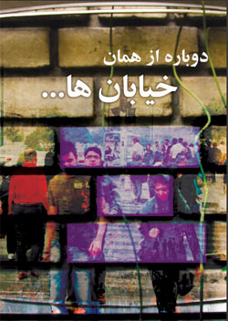
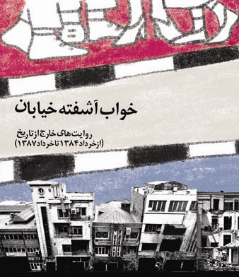
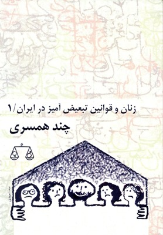
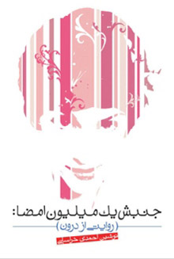
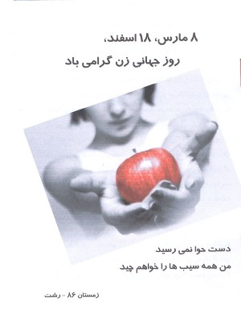
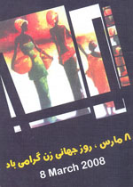
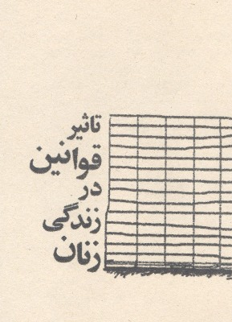

انتشارات کمپین
دوباره از همان خیابانها ، ویژه 22 خرداد ، خرداد 89

"دوباره از همان خیابان ها "، مجموعه ای مصاحبه ها و یادداشت است که با هدف مکتوب کردن روایت های بخشی از فعالان جنبش زنان گردآوری شده است
********************************************
خواب آشفته خیابان، ویژه 22 خرداد 78

"خواب آشفته خیابان"، مجموعه ای مصاحبه ها و یادداشت است که با هدف مکتوب کردن روایت های بخشی از فعالان جنبش زنان از وقایع22خرداد سال های1384و1385 و همچنین13اسفند 1385 گردآوری شده است.
********************************************
کتابچه تاثیر قوانین بر زندگی زنان، شماره یک/چند همسری

********************************************
جنبش یک میلیون امضاء: روایتی از درون / نوشین احمدی خراسانی

********************************************
کتابچه ویژه 8مارس از کمپین رشت

********************************************
فولدر ویژه 8مارس از کمپین رشت

******************************************
دفترچه تاثیر قوانین بر زندگی زنان(یکی از سه سند اصلی کمپین)

برای دریافت کتابچه به این قسمت مراجعه کنید
انتشارات دیگران
مقالههاى اين بخش
- 7 شهریور 1387

گزارش تصویری
تغییر برای برابری
- 5 شهریور 1387

در آغاز سومین سال فعالیت کمپین یک میلیون امضا
تارا نجد احمدی
- 3 شهریور 1387

خشونتهای به نام ناموس
کمیته علیه خشونت های ناموسی
- 30 مرداد 1387

گزارش: مریم مالک/ نیلوفر مهدیان، عکس: مارال فرخی
- 27 مرداد 1387

لايحه ضد خانواده
ثريا آزاد فر
- 21 مرداد 1387

در حاشیه افتتاحیه المپیک چین
عفت ماهباز
- 17 مرداد 1387

نسرین ستوده،وکیل صغرا :
- 11 مرداد 1387

- 6 مرداد 1387

جنبش زنان از مشروطه تا امروز
عسل اخوان
- 29 تیر 1387

ترويج قتل هاي ناموسي
مرجان لقايي
- 24 تیر 1387

"گفتگوی هما مداح با انجمن حقوق زنان در توسعه"
- 17 تیر 1387

زنان و عرصه عمومي
هدي امينيان
- 8 تیر 1387

آزمون همبستگي
نفيسه آزاد
- 3 تیر 1387

نگاهی به ارتباط جنبش های اجتماعی
عبدالله مومنی
- 25 خرداد 1387

باورهاي مردسالارانه
سياوش خدايي
- 20 خرداد 1387

شهلا اعزازی
- 15 خرداد 1387

زنان و کنوانسیون رفع تبعیض...
حمید حمیدی
- 11 خرداد 1387

سهم زنان و انقلاب/ قوانین مدنی
حمید حمیدی
- 8 خرداد 1387

حقوق مدنی و سیاسی
حمید حمیدی
- 3 خرداد 1387

توسعه ی اجتماعی
فرهاد سلمانیان
- 30 اردیبهشت 1387

ازدواج مجدد
جامعه شناسی ایران / مهناز عابدی*
- 24 اردیبهشت 1387

نقد طرح ها و قوانین
جمشيد آئين دار
- 23 اردیبهشت 1387

حمایت دولورس هرتا از کمپین
آزاده فرامرزی ها
- 16 اردیبهشت 1387

هنر زنان
فیروزه مهاجر
- 25 فروردین 1387

تارا نجداحمدي
- 26 بهمن 1386

آزاده فرامرزيها
- 18 آبان 1386

خدیجه مقدم
- 29 اسفند 1385

نوشته ی پویا
| 30
|